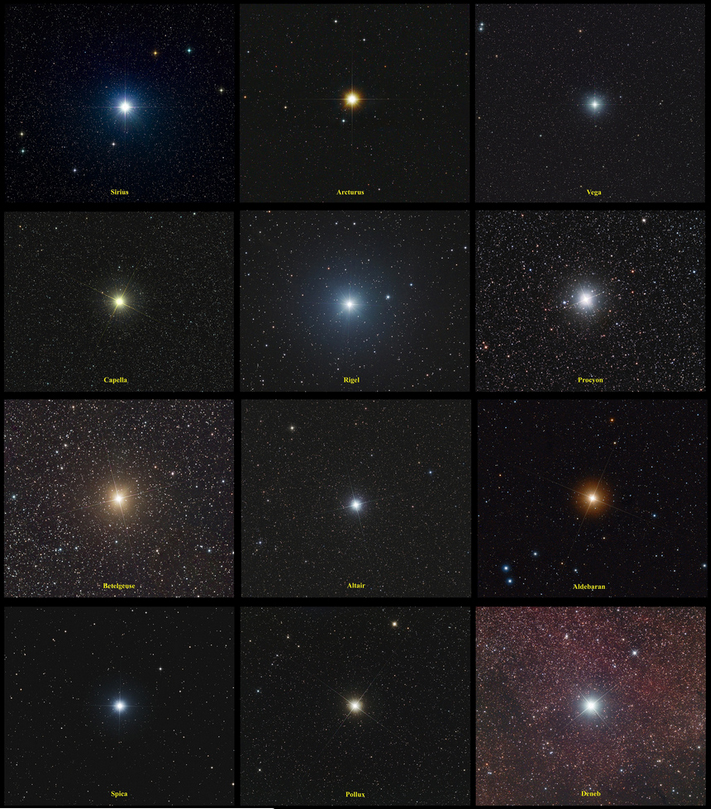

THE SOLAR SYSTEM
Why is it called The Solar System ?
There are many planetary systems like ours in the universe, with planets orbiting a host star. Our planetary system is named the "solar system" because our Sun is named Sol, after the Latin word for Sun, "solis," and anything related to the Sun we call "solar."
ONE OF BILLOINS
Our solar system is made up of a star, eight planets, and countless smaller bodies such as dwarf planets, asteroids, and comets.
BRIGHTEST STARS

THE PLANETS OF OUR SOLAR SYSTEM

A LONG WAY ROUND
It takes our solar system about 230 million years to complete one orbit around the galactic center.
GOOD ATMOSPHERES
Our solar system is a region of space. It has no atmosphere. But it contains many worlds – including Earth – with many kinds of atmospheres.
MANY MOONS
The planets of our solar system – and even some asteroids – hold more than 200 moons in their orbits.
SPECIAL EVENT
Mercury, Venus, Mars, Jupiter and Saturn, in that order, will be aligned for the first time in 18 years. It may be possible to see Uranus between Venus and the moon with binoculars or a telescope, once the skies are crystal clear. According to ScienceFocus, “The best time to see the planets align will be between 3.39 am and sunrise at 4.43 am on the morning of 24 June.”